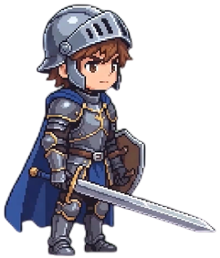
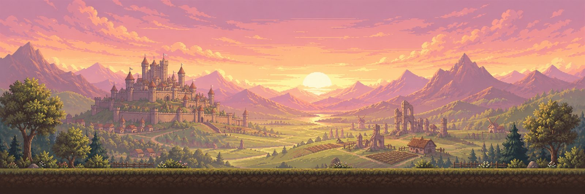
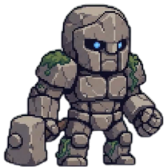
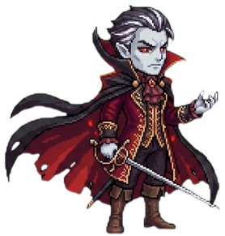

기사
가까이에서 싸우는 근접 직업이에요. 체력과 방어력이 높아요.
스킬: 짧은 거리를 빠르게 돌진하는 대시

「어이, 모험가! 무기 손질이 필요하면 들러.
...가게는 아직 준비 중이지만 말이야.」
퀘스트 「마을의 위협」의 목표는 사냥터의 몬스터 처치예요.
마을을 나서 사냥터로, 그리고 보스가 기다리는 곳으로 모험을 떠나 보세요.
친구를 파티에 초대하고, 초대를 수락하면 함께 사냥을 떠날 수 있어요.
가까이에서 싸우는 근접 공격과 멀리서 맞히는 원거리 공격, 직업마다 다른 스킬로 몬스터와 맞서요.
옆으로 펼쳐진 맵을 달리고 점프하며 누빕니다.
사냥터의 몬스터를 정해진 수만큼 처치하면 보스에게 가는 길이 열려요.
체력이 다해 쓰러지더라도 다시 일어나 도전할 수 있어요.

가까이에서 싸우는 근접 직업이에요. 체력과 방어력이 높아요.
스킬: 짧은 거리를 빠르게 돌진하는 대시
멀리서 공격하는 원거리 직업이에요. 체력은 낮지만 더 빠르게 움직입니다.
스킬: 적들 위로 떨어지는 낙뢰, 원하는 방향으로 옮겨 가는 순간이동
마을에서 출발해 사냥터를 지나 보스와 맞서고, 결과를 확인한 뒤 다시 마을로 돌아옵니다.
슬라임

골렘

보스
아직 게임에 없는 내용이에요. 지금 만들고 있는 것과 계획 중인 것을 나눠 적었습니다.
개발 중
몬스터를 물리치고 얻는 아이템과 그것을 담아 두는 인벤토리를 만들고 있어요.
개발 중
다시 접속했을 때 내 캐릭터로 이어서 플레이할 수 있게 만들고 있어요.
계획
사냥으로 얻은 자원으로 길드 거점을 발전시키는 것이 이 게임이 향하는 모습이에요. 길드 창고와 거점 시설도 계획에 있습니다.
계획은 개발하면서 바뀔 수 있어요.
지금은 내려받아 플레이할 수 있는 공개 버전이 없어요.